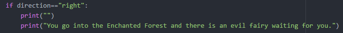
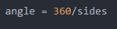
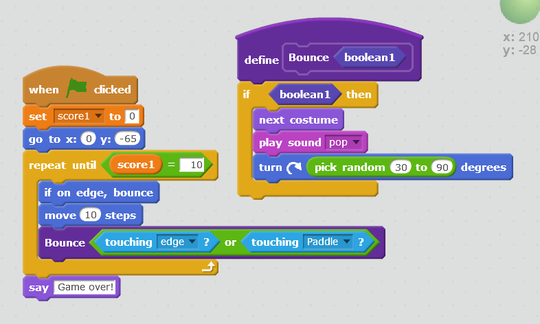
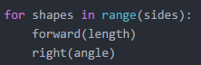
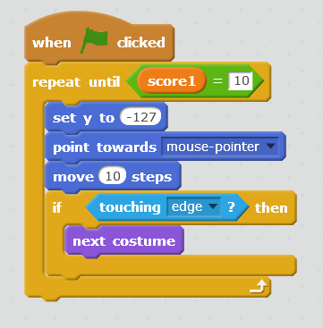

Hello! My name is Rozi Hidaru, and I'm a rising senior at Lakeside School in Seattle, Washington. I play basketball and I run cross-country and track. I am also the president of Lakeside's Black Student Union, and I am a member of the Student Health Advocacy Committee and the Student Affinity Leadership Team. In my free time I like to read, spend time with my three younger siblings, and watch TV. A fun fact about me is that although I love to travel, I've only been on a plane three times. I have also never broken a bone. This summer I'm participating in a Girls Who Code internship at Amazon. I'm very interested in computer science, and through this internship I've been learning even more about programming, like how to make this website. I hope to continue learning about computer science and possibly continue to make it my career!
One of my first projects in Scratch was a side scroller game. My partner and I made a game called Flying Food, in which the player has to avoid the salad (-20 points) and try to eat the tacos (+10 points). The game ends when the player gets 100 points (they win) or -100 points (they lose).
Reflection on Robots:
Reflection on Robot Song and Dance:
Conditionals: A conditional runs code if a certain requirement is met. If (something): do x. Else: do y.
A real-life example would be that if you get an A on your test, your parents will let you hang out with your friends. If not, you have to stay home and study.
Click on the image to enlarge it.
Click on the image to enlarge it.
Click on the image to enlarge it.
Click on the image to enlarge it.
 